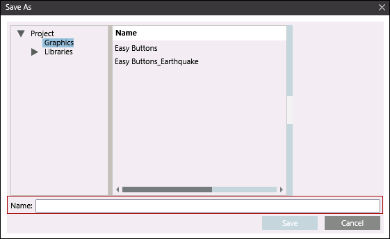

Easy Buttons
The following procedures provide additional information on easy buttons. For background information related to easy buttons, see reference section.
Prerequisites
- System Manager is in Engineering mode.
- System Browser is in Application View.
Customize Background for an Easy Button
- Select Applications > Notification.
- Select the Easy Buttons tab.
- Click Page Setup .
- A confirmation message displays.
- Click Yes.
- In the Set Easy Buttons background dialog box, browse to the location of the image, select the file, and click Open.
- The background for the Easy Buttons screen is changed to the selected image.
- Click Save
 .
.
- The background is saved.
Delete an Easy Button
- One or more easy buttons are configured.
- Do one of the following:
- Select Applications > Graphics > Easy Buttons
- Select Applications > Notification.
- The Easy Buttons tab displays.
- Select the easy button to be deleted.
- Delete the button by either pressing DEL or clicking Delete in the Edit group box on the Home tab.
- Click Save
 .
.
- The selected easy button is deleted.
Restore the Easy Buttons Tab
- Select Applications > Graphics > Easy Buttons.
- The Easy Buttons tab displays.
- Select Applications > Notification.
- Drag the Notification node onto the Easy Buttons tab.
- The Windows folder icon displays.
- Right-click the Windows folder icon and deselect the Visible option.
NOTE: If the Visible option is deselected, the Windows folder icon is not displayed in the Easy Buttons tab. - Click Save .
- Restart the Desigo CC application.
NOTE: You cannot see the Easy Buttons tab in the Operating mode of Applications > Notification if you delete the Windows folder icon in the Easy Buttons tab. In that you must first restore the Easy Buttons tab.
Associate a Graphic with an Easy Button
- Ensure that one or more incident templates or notification templates are configured.
- Select Applications > Graphics.
- The Graphics tab displays.
- Click Create New and then select New Graphic
 .
. - In the editor that displays, associate a notification template or incident template with a graphic by performing the following steps:
- Select Notification > Incident Templates. Drag the incident template onto the Untitled section.
- Select Notification > Notification Templates. Drag the notification template onto the Untitled section.
- A symbolic representation of the graphic displays.
- Click Save
 .
. 
- In the Save As dialog box, enter a name for the configured graphic in the Name field and click Save .
- The graphic is created and must now be associated with an easy button.
- Navigate to Applications > Notification and click the Object Configurator tab.
- Open the Related Items expander.
- From the Graphics node, drag the saved graphic to the Related Items expander.
- Click Save .
- The graphic is associated with an easy button.